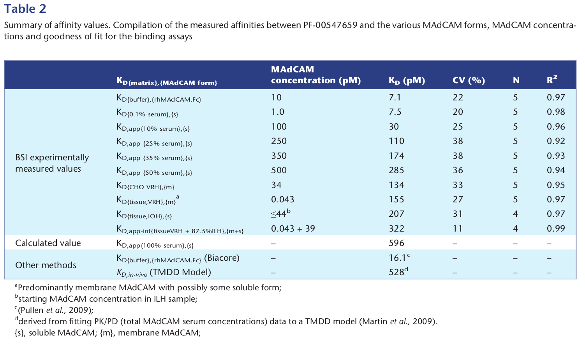

../../cm-ucl/corpus-oa-pmr-v02/10.1111_bph.13654/tables/table1/table.png
|
| Thermodynamic K _{D} Apparent K _{D} Apparent integrated K _{D} In vivo K _{D} |
K _{D,{%} _{matrix},} _{{target} _{form}} K _{D,{buffer,serum,cells,} _{tissue},} {soluble, membrane} K _{D,} _{app{%} _{matrix},} _{{target} _{form}} K _{D,} _{app-int} _{{%} _{matrix}} K _{D,in-vivo} |
Thermodynamic binding affnity (measured with target concentration ≤true K _{D} ) K _{D} remains the same, though there is an apparent right shift from K _{D} related to higher target concentrations When more than one form of binding partner contributes to the binding affnity Model (TMDD) derived in vivo K _{D} based on clinical drug serum concentrations |
≤Thermodynamic K _{D} > > Thermodynamic K _{D} Any Endogenous concentration |
../../cm-ucl/corpus-oa-pmr-v02/10.1111_bph.13654/tables/table1/table.svg.html
|
|

../../cm-ucl/corpus-oa-pmr-v02/10.1111_bph.13654/tables/table2/table.png
|
| BSI experimentally measured values Calculated value Other methods |
K _{D{buffer},{rhMAdCAM.Fc}} K _{D{0.1%} _{serum},{s}} K _{D,app{10%} _{serum},{s}} K _{D,app} _{{25%} _{serum},{s}} K _{D,app} _{{35%} _{serum},{s}} K _{D,app} _{{50%} _{serum},{s}} K _{D{CHO} _{VRH},{m}} K _{D{tissue,VRH},{m}} ^{a} K _{D{tissue,IOH},{s}} K _{D,app-int{tissueVRH} _{+} _{87.5%ILH},{m+s}} K _{D,app{100%} _{serum},{s}} K _{D{buffer},{rhMAdCAM.Fc}} (Biacore) K _{D,in-vivo} (TMDD Model) |
10 1.0 100 250 350 500 34 0.043 ≤44 ^{b} 0.043 + 39 – – – |
7.1 7.5 30 110 174 285 134 155 207 322 596 16.1 ^{c} _{d} 528 |
22 20 25 38 38 36 33 27 31 11 – – – |
5 5 5 5 5 5 5 5 4 4 – – – |
0.97 0.98 0.96 0.92 0.93 0.94 0.95 0.97 0.97 0.99 – – – |
| ^{a Predominantly membrane MAdCAM with possibly some soluble form;} |
| ^{b starting MAdCAM concentration in ILH sample;} |
| ^{c (Pullen et al., 2009);} |
| ^{d derived from ftting PK/PD (total MAdCAM serum concentrations) data to a TMDD model (Martin et al., 2009).} |
| {s}, soluble MAdCAM; {m}, membrane MAdCAM; |
../../cm-ucl/corpus-oa-pmr-v02/10.1111_bph.13654/tables/table2/table.svg.html
|